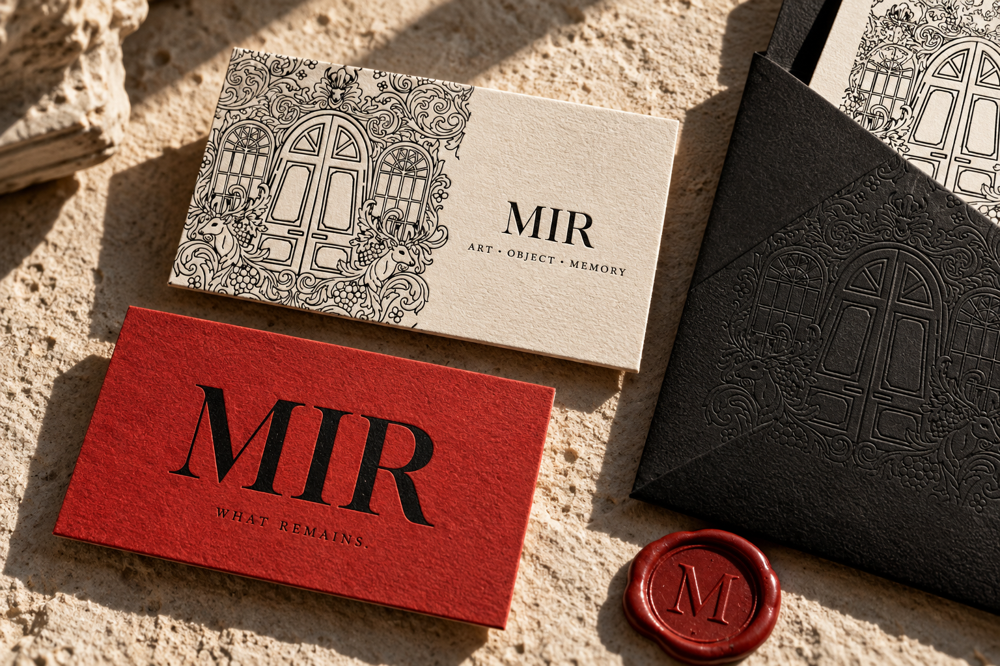
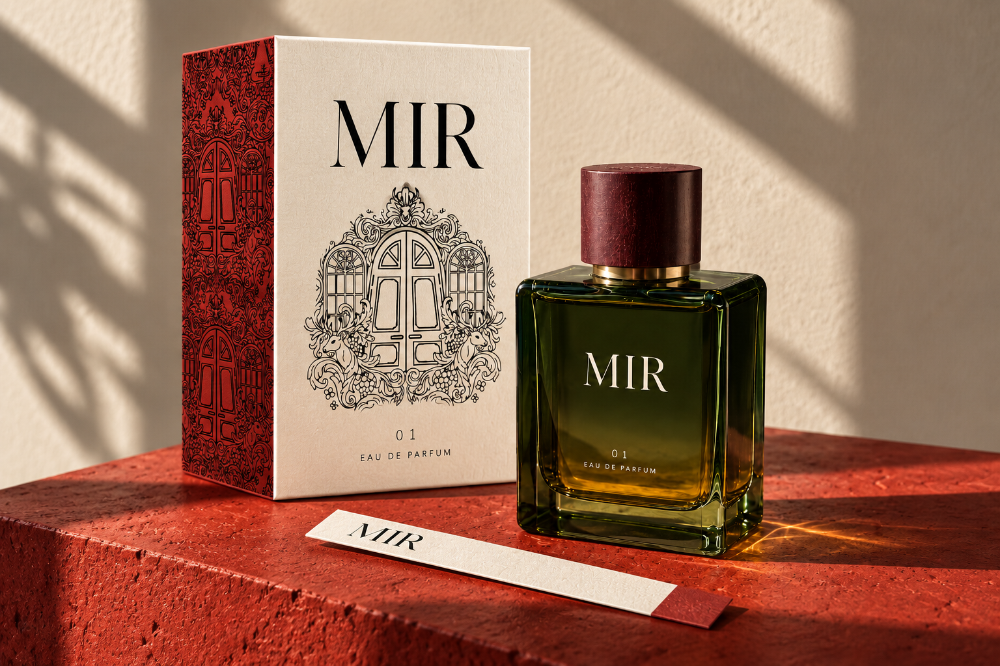
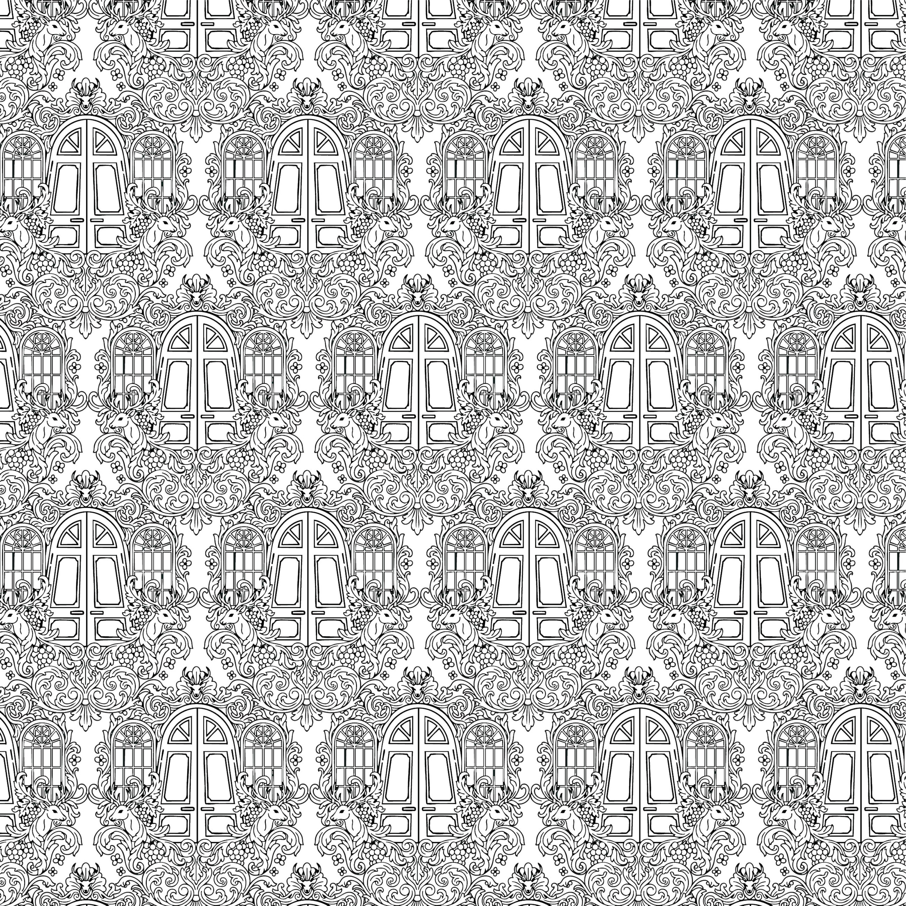
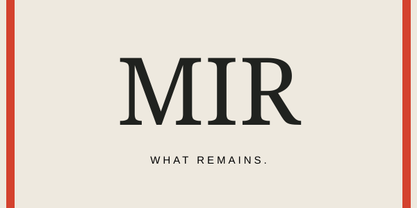
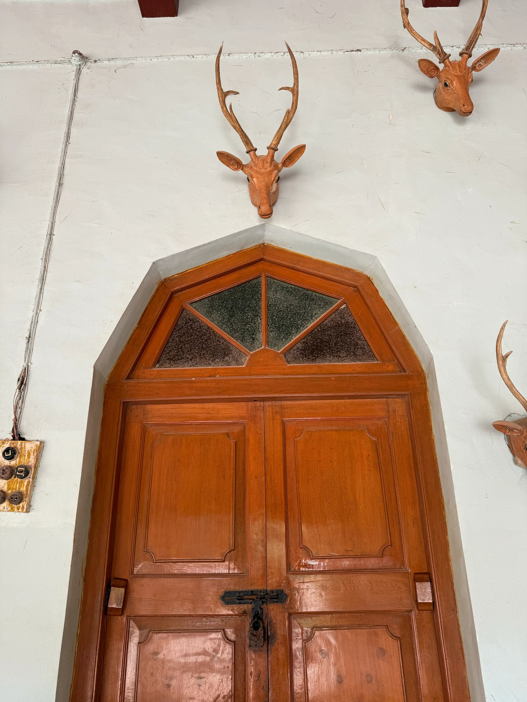

ART, OBJECT & MEMORY
SELF-INITIATED / 2026
What
remains.
A fragrance imagined through
the traces of a place.
MIR / COMMUNICATION DESIGN
Can you see
a scent?
A door remembers a hand. Cloth holds an impression. A room keeps something of the people who leave it.
MIR turns these traces into a visual language for a speculative fragrance. Architectural drawings and textile repeats from the existing portfolio move into paper, glass, motion and interaction.
Read the full case study ↗One clear signature.
An intricate world around it.
THE DESIGN GRAMMAR
Quiet name.
Expressive surface.
The mark stays spare. The original doorway illustration supplies the detail. Pattern is used on a reverse, a side panel or a sleeve, leaving the essential information clear.
#EEE9DF
#20221F
#D4422E
{kind=link}

THE ACTUAL ARTWORK
A small format.
A lasting impression.
85 × 55 mm cards. A clean typographic face paired with the doorway repeat. The separate scent strip extends the same identity into a sampling ritual.
{kind=link}

THE MATERIAL CONNECTION
From a room
to an object.
The doorway moves from textile repeat to carton panel. Green glass and an oxblood cap retain the material direction explored earlier; paper and vermilion bring the campaign together.
{kind=link}
{kind=link}
{kind=link}
05 / IDENTITY IN TIME
Gone.
Still here.
A twelve-second typographic film. Ornament emerges, the word moves, and its impression lingers. The transition from a clear form to an afterimage is the campaign idea expressed in time.
Play the motion study ↗Working canvas animation · playback, scrubbing and video export
06 / THE VISITOR BECOMES THE MAKER
Your gesture.
Your impression.
Draw across the surface to reveal the ceiling pattern. Choose a motif, change the scale and decide how long the impression remains. Save the result as your own campaign postcard.
Try the interactive piece ↗Mouse, touch and keyboard · no account or personal data required
THE TEXTILE CONNECTION
A pattern
worth carrying.
The original doorway repeat gives the campaign a material history. Its next physical application is a printed wrap that carries the scent cards and bottle together.
Download textile-label artwork ↗{kind=link}


07 / WHERE THE LANGUAGE COMES FROM
Existing work.
New context.


This sequence identifies the source and its new use. It is not a claim that new hand sketches or physical prototypes were made during this project.
THE CAMPAIGN JOURNEY
Encounter. Explore.
Participate. Keep.
Encounter
Typographic posters make an impression before revealing the product.
Explore
Motion gives the identity rhythm and explains the trace through time.
Participate
The interactive piece turns a visitor's gesture into a visual souvenir.
Keep
The business card, scent strip and textile label carry the language into objects.
MIR / WHAT REMAINS.
An impression
that remains.
Read the full case study ↗Project notes, credits & file guide ↗